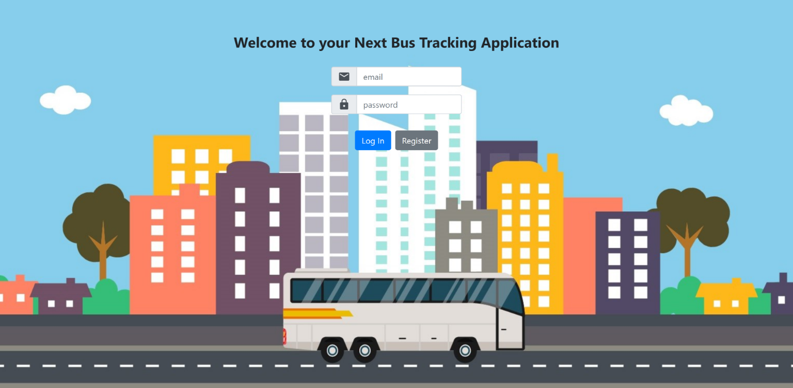
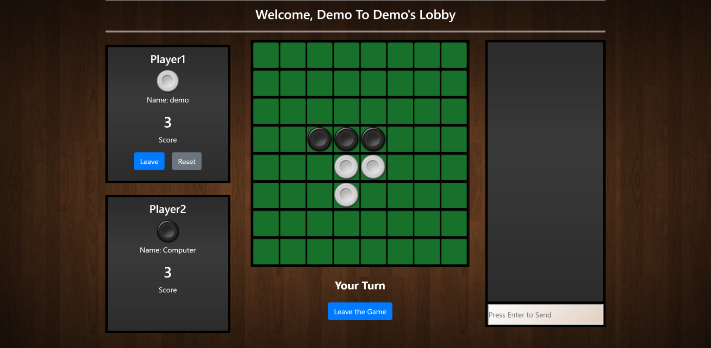
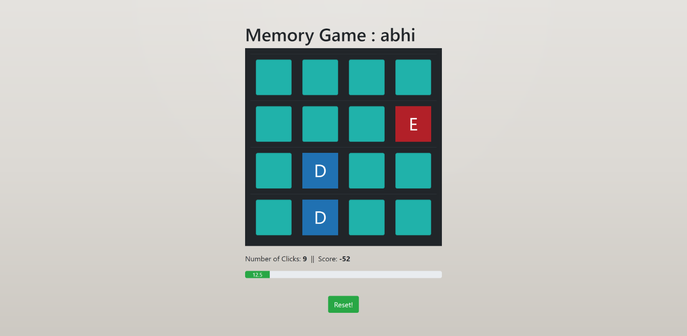
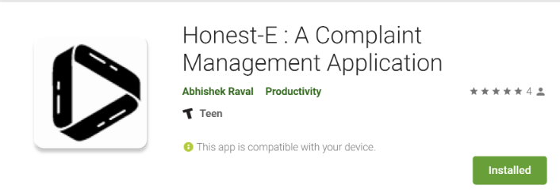
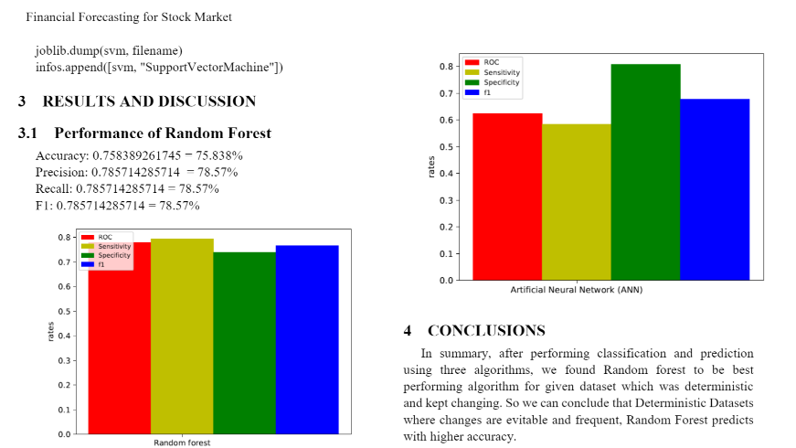
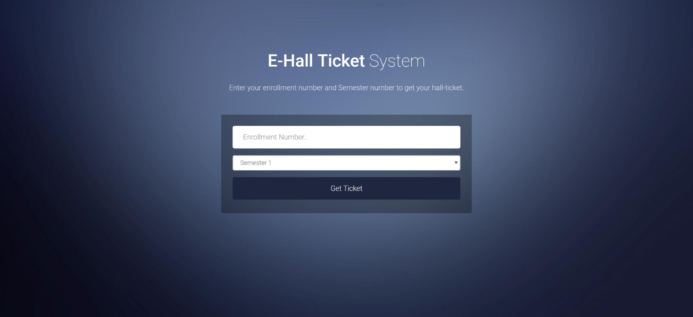

MBTA Bus Tracking Application
- Developed a Bus Tracking Application utilizing real-time data from MBTA API and planning shortest route.
- Created an Uber-like tracking module for viewing the live location of any bus on Map using Google Maps API.
- Technologies Used: React.js, Redux.js, Web Sockets, Elixir, Phoenix, PostgreSQL, AJAX, REST, Swagger, Bootstrap.

Multiplayer Othello Game
- Built a Multiplayer Othello game supporting unlimited observers and live chat system using Phoenix-Channels.
- Implemented heuristic-based minimax algorithm for the AI in single-player mode achieving 70% success rate.
- Technologies Used: React.js, Web Sockets, Elixir, Phoenix, Bootstrap.

Memory Game
- Built a Mind Memory Game using React.js, Bootstrap for frontend and Elixir's Web Channels for backend.
- Employed UserAgents API of Phoenix to save the state of game and maintain session.
- Technologies Used: React.js, Elixir, Phoenix, HTML5, CSS3, Bootstrap.

Honest-E : A Complaint Management Application
- Engineered an Android application to automate an existing age-old paper-based redressal system.
- Improved the complaint management processing time from 2 days to 2 hours.
- Technologies used: Android, PHP 5, MySQL, RESTful Web Services, Apache, Genymotion.

Financial Forecasting For Stock Market
- Built a Stock Market Prediction mechanism based on the Yahoo Stocks dataset, using Scikit-Learn library.
- Technologies Used: Python, Jupyter Notebook, Algorithms: Neural Networks, SVM, Random Forest.

E-HallTicket
- Developed a tool which generated Exam Hall Tickets online.
- Technologies Used: HTML, CSS3, JavaScript, Bootstrap, MySQL.
- Technologies used: Android, PHP 5, MySQL, RESTful Web Services, Apache, Genymotion.
Programming Design Paradigm Minor Projects
- Designed the Squash Racket game using Racket, HtDp2e Graphical Library and received A+ grade for perfect design of the code.
- Created a Simple Lexer Analyzer using Racket and received appreciation for the ideal presentation of the code.
- Built an Athlete Ranking System using Java as well as Racket, demonstrating the prowess of functional and object oriented languages.
- Devised a Roster/Team Building Sytem from player list using Java Abstract DataTypes and Interfaces.
- Technologies Used: Java, Ecllipse IDE, Racket, DrRacket, Github.
Artificial Intelligence Minor Projects
- Implemented Search algorithms for Uninformed Search and Informed Search.
- Uninformed Search: Breadth First Search, Depth First Search, Uniform Cost Search, Depth Limited Search, Iterative Deepening Search.
- Informed Search: Best First Search as well as Heuristic Search using A*, Minimax, Expectimax and Alpha-Beta pruning.
- Executed reinforcement learning, Q-learning, Bayesian Network, in Pacman Game.
- Technologies used: Python, PyCharm IntelliJ IDE.